1020D30 oil seal cover, fly wheel side - r + r and replace seals
- Path
- Procedures > 10 ENGINE > 1020 CRANKCASE SUMP AND COVERS > 1020D oil seals on crank shaft > 1020D30 oil seal cover, fly wheel side - r + r and replace seals
- Kind
- repair procedure (removal / refitting; the operation number is the code)
- Applies to
- engines: 1.9 JTD 8v , 1.9 JTD 16v, 2.4 JTD 10v, 2.4 JTD 20v; all production periods
- Interactive page
- https://sloeber94.github.io/elrnDB-a156/en/#/3237762
Applies to: engines: 1.9 JTD 8v , 2.4 JTD 10v; all production periods
 Removing
Removing
 Refitting
Refitting1. Undo the bolts (1a) and remove the oil cover, flywheel side (1b).
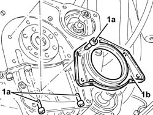
Applies to: engines: 1.9 JTD 8v , 2.4 JTD 10v; all production periods
Refitting
Removing1. Fit the oil cover, flywheel side (1a) using the tool (1b).
 | Name | Country |
|---|---|---|
1b | Fitting tool | 1.820.619.000 |
2. Tighten the bolts for the oil cover, flywheel side, to the recommended torque.
 | Fastening | Component | Ø | Value (daNm) |
|---|---|---|---|---|
2 | Bolt | FLYWHEEL SIDE COVER | M6 | 0.8 - 1.0 |
Remove the tool.
| Name | Country |
|---|---|---|
- | Fitting tool | 1.820.619.000 |
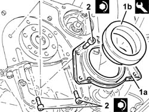
Applies to: engines: 1.9 JTD 16v; all production periods
Removing
RefittingProceed with removal 1084A16 oil dip stick pipe - r r .
1. Undo the plug and drain the engine oil.
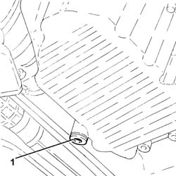
Applies to: engines: 1.9 JTD 16v; all production periods
1. Undo the bolts (1a) and the nuts (1b) fixing the catalytic preconverter mounting bracket.
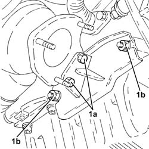
Applies to: engines: 1.9 JTD 16v; all production periods
1. Loosen the collar (1a) and remove the catalytic preconverter (1b).
2. Keep the catalytic preconverter mounting bracket.
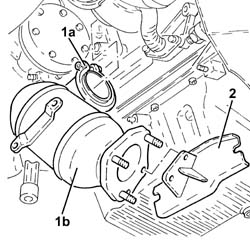
Applies to: engines: 1.9 JTD 16v; all production periods
1. Loosen the band and disconnect the condensation oil recovery pipe from the crankcase sump.
2. Disconnect the electrical connection for the engine oil level sensor.
 | Name | Connector |
|---|---|---|
2 | Engine oil level sensor |
3. Undo the bolt securing the intermediate drive shaft mounting to the crankcase oil sump.
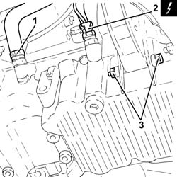
Applies to: engines: 1.9 JTD 16v; all production periods
1. Undo the front and rear bolts (1a) securing the crankcase sump using tool (1b).
| Name | Country |
|---|---|---|
1b | Spanner | 1.860.833.001 |
2. Undo the side bolts (2a) securing the crankcase sump using tool (2b).
| Name | Country |
|---|---|---|
2b | Spanner | 1.860.834.001 |
3. Use the tool to cut the crankcase sump sealant.
| Name | Country |
|---|---|---|
3 | Blade | 1.870.718.000 |
4. Remove the crankcase sump.
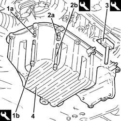
Applies to: engines: 1.9 JTD 16v; all production periods
1. Undo the bolts (1a) and remove the oil cover, flywheel side (1b).
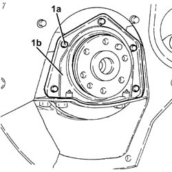
Applies to: engines: 1.9 JTD 16v; all production periods
Refitting
RemovingThoroughly clean the contact surfaces between the flywheel side oil seal cover and the crankcase sump of any sealant residues.
1. Refit the flywheel side oil seal (1a) in its seating and tighten the bolts (1b) to the specified torque.
| Fastening | Component | Ø | Value (daNm) |
|---|---|---|---|---|
1b | Bolt | FLYWHEEL SIDE COVER | M6 | (Engine crankcase side) 0.8 - 1.0 |
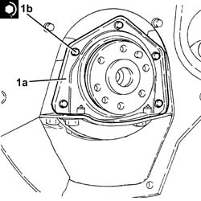
Applies to: engines: 1.9 JTD 16v; all production periods
Thoroughly clean the contact surfaces of crankcase sump and cylinder block of sealant residues.
Apply silicone sealant around the edge of the crankcase sump.
1. Refit the crankcase sump.
2. Tighten the side bolts (2a) for the crankcase sump to the recommended torque using the tool (2b).
| Fastening | Component | Ø | Value (daNm) |
|---|---|---|---|---|
2a | Side bolts | OIL SUMP | M8 | (Engine crankcase side) 2.3 ÷ 2.8 |
| Name | Country |
|---|---|---|
2b | Spanner | 1.860.833.001 |
3. Tighten the front and rear bolts (3a) for the crankcase sump to the recommended torque using the tool (3b).
| Fastening | Component | Ø | Value (daNm) |
|---|---|---|---|---|
3a | Front and rear bolt | OIL SUMP | M6 | (Crankcase front/rear covers side 08 10 |
| Name | Country |
|---|---|---|
3b | Spanner | 1.860.834.001 |
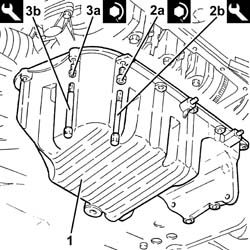
Applies to: engines: 1.9 JTD 16v; all production periods
Tighten the bolt securing the intermediate drive shaft mounting to the oil sump.
Connect the electrical connection for the engine oil level sensor.
Connect the condensation oil recovery pipe to the crankcase sump and tighten the band.
Place the catalytic preconverter complete with mounting back in its housing and fasten it to the turbocharger using the collar.
Tighten the bolts and the nuts fixing the catalytic preconverter mounting bracket.
Place a new engine oil drain plug, complete with new gasket, back in its housing and tighten it to the recommended torque.
| Fastening | Component | Ø | Value (daNm) |
|---|---|---|---|---|
- | - | - | - | - |
Proceed with refitting 1084A16 oil dip stick pipe - r r .
Refill the engine oil lubrication system - 0010T11 engine oil check level and top up .
Applies to: engines: 2.4 JTD 20v; all production periods
Removing
Refitting1. Undo the bolts (1a) and (1b), then remove the flywheel side oil seal cover (1c).
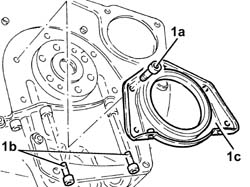
Applies to: engines: 2.4 JTD 20v; all production periods
Refitting
RemovingThoroughly clean the contact surfaces between the flywheel side oil seal cover and the crankcase sump of any sealant residues.
Apply silicon sealant to the matching surface between the crankcase sump and the flywheel side oil seal cover.
1. Refit the flywheel side oil seal (1a) in its seating and tighten the bolts (1b) to the specified torque.
| Fastening | Component | Ø | Value (daNm) |
|---|---|---|---|---|
1b | Bolt | FLYWHEEL SIDE COVER | M6 | (Engine crankcase side) 0.8 - 1.0 |
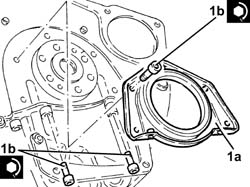